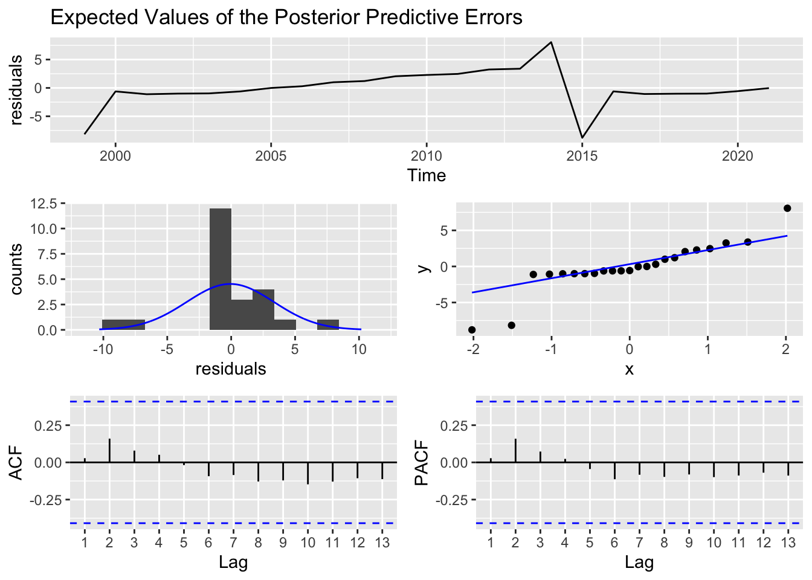

Chapter 4 Bayes Forecast
library(bayesforecast)Bayesian Forecast SARIMA:
In our last model specification, we decided to use the bayesforecast package. In particular we are fitting a SARIMA model in Stan.
SARIMA stands for seasonal auto-regressive integrated moving average. This is an extension of ARIMA and is therefore more robust as it is able to support seasonal data.
ARIMA is a method that combines both auto-regressive methods and moving averages- it is widely used on time series data in attempts to predict future values. There are four components that explain time series data, trend, seasonality, irregularity, and cyclic components.
Reason to use Bayesian forecast:
The reason that we are using Bayesian forecast is that it accounts for seasonal order, trends, or seasonality, which could help make the model more accurate. Moreover, Bayesian Forecast can also automate the process within the stan_sarima and auto_arima, in which the model will see which order, seasonal, or trend, fits with certain companies and variables.
For Bayesian Forecast, we will first try to see the accuracy rate of the model compared to our complex hierarchical model. After that, using Bayesian Forecast, we will try to see what are the predicted earnings after ten years for Amazon (symbol: “AMZN”) and American Airlines (symbol: “AAL”).
4.1 Model Parameters
Here are the parameters for an ARIMA model:
P - Order of the AR term. This is the number of Y to be used as predictors. For example, if we are predicting 2021 earnings, how many previous years earnings are we going to use?
Q - Order of the MA term. This is the number of lagged forecast errors. How many past forecast errors will we be using?
D - The minimum differencing period. A stationary time series implies one that has properties that do not depend on the time at which the series is observed.
As mentioned above, SARIMA is able to support seasonal data. Below are the parameters for a SARIMA model that ARIMA does not have.
P - Seasonal auto-regressive order. A P=1 would make use of the first seasonally offset observation in the model, e.g. t-(m1) or t-12. A P=2, would use the last two seasonally offset observations t-(m1), t-(m2).
D - Seasonal difference order. A D of 1 would calculate a first order seasonal difference and a Q=1 would use a first order error in the model (e.g. moving average).
Q - Seasonal moving average order.
M - The number of time steps for a single seasonal period. M is a very important parameter as it influences the P, D, and Q parameters. For example, an m of 5 for yearly data suggests a 5-year seasonal cycle (in the context of business cycles.
Model Tuning
For the model we will use the default stan_sarima model in order to predict the earnings for the company. The reason for that is because for each company, it will have different order, seasonal and period. Manually picking the order and seasonal for each company might result in large errors as each company belongs in different fields, different sectors and also have different stories. Manually picking each company might result in a lot of inaccuracies.
As we chose the default prior for the companies, it will assume that each company will have a prior normal function for the moving average and auto-regressive parameters. Additionally, the auto-regressive parameters and moving averages will have the same normal function of N(0,0.5)
4.2 Modeling
4.2.1 Accuracy
In order to predict next year’s earnings for every company, as it acts like a time series model, we need to have companies that have at least 3 years of earnings. We first eliminate the companies that have only 2 years of earnings in this dataset, then we will create a function to find the earnings for the next year of these companies.
COMPANY_Names <- data_elimatedO$COMPANY
unique_COMPANY <- unique(COMPANY_Names)
unique_COMPANY
data_elimatedO %>%
group_by(COMPANY) %>%
summarize(n=n()) %>%
filter(n <= 2)unique_COMPANY_2 <-unique_COMPANY
unique_COMPANY_2 = unique_COMPANY_2[factor(unique_COMPANY_2) %in% c("ABBV","AMCR" ,"BAC" ,"CARR", "CTVA", "DOW", "FB", "GOOG", "GOOGL", "INTC", "JNJ", "OTIS", "PSX", "FOX", "FOXA", "HD", "KHC", "LYB", "MDLZ", "MRK", "MRNA", "OTIS", "PEP", "JPM") == FALSE]
total_number_of_COMPANY <- length(unique_COMPANY)
total_number_of_COMPANY_2 <- length(unique_COMPANY_2)After finding all of the desirable companies, we are left with 464 companies. We then created a function in order to predict the earnings next year for these 464 companies using Bayesian Forecast:
point <- high <- low <- rep(0, 464)
for (i in 1: total_number_of_COMPANY_2) {
company <- unique_COMPANY_2[i]
data_new <- data_elimatedO %>%
filter(COMPANY == company) %>%
dplyr::select(EARNINGS_Scaled, YEAR) %>%
mutate(min_year = min(YEAR),
max_year = max(YEAR)) %>%
arrange(EARNINGS_Scaled)
min_year <- data_new$min_year[1]
max_year <- data_new$max_year[1]
vector <- data_new$EARNINGS_Scaled
myts <- ts(vector, start=c(min_year), end=c(max_year), frequency=1)
sf1 = stan_sarima(ts = myts, iter = 2 * 5000)
result = forecast(object = sf1,h = 1)
point[i] <- result$mean
low[i] <- result$lower[2]
high[i] <- result$upper[2]
}
df <- data.frame(unique_COMPANY_2[1: total_number_of_COMPANY_2], point, low, high)
dfAfter having the dataset, we then combine the function with the actual dataset in order to see the accuracy rate for these models in which it predicts the earnings next year for these companies.
names(df)
df <- df %>%
mutate(COMPANY = `unique_COMPANY_2.1.total_number_of_COMPANY_2.`) %>%
select(- `unique_COMPANY_2.1.total_number_of_COMPANY_2.`)
testing <- data_elimatedO %>%
group_by(COMPANY) %>%
filter(row_number()==1)
training <- anti_join(data_elimatedO, testing)
testing
bayesian_forecast_earnigns = merge(x = df, y = testing, by = "COMPANY", all.x = TRUE)
bayesian_forecast_earnigns
bayesian_forecast_earnigns <- bayesian_forecast_earnigns %>%
select(COMPANY, point, low, high, YEAR, Earnings_next_year_Scaled)
bayesian_forecast_earnigns
write_csv(bayesian_forecast_earnigns, "bayesian_forecast_earnigns.csv")bayesian_forecast_earnigns <- read.csv("bayesian_forecast_earnigns.csv")After combining the two datasets, we then evaluate the accuracy rate for the Bayesian forecast model:
bayesian_forecast_earnigns <- bayesian_forecast_earnigns %>%
mutate(median_dist = abs(point - Earnings_next_year_Scaled)) %>%
mutate(Is_90 = (Earnings_next_year_Scaled >= low) & (Earnings_next_year_Scaled <= high))
mean(bayesian_forecast_earnigns$median_dist)## [1] 0.6589985mean(bayesian_forecast_earnigns$Is_90)## [1] 0.5150862Overall, as we can see, the accuracy is not really high. The distance from the median is 0.6589, which shows that a company’s earnings will be off by around 0.6589 billions, which is a fairly high number. Moreover, only 51.5% of the companies is within the 90% percentile, which is a relatively small number. Overall, the model performs worse than the hierarchical model on section 3.
4.2.2 Company Predictions
After creating the model, we will then move on to predict the earnings of the future year for the companies. The companies we are going to predict will be Amazon (symbol: “AMZN”) and American Airlines (symbol: “AAL”).
Amazon Prediction
AMZN <- data %>%
filter(COMPANY == 'AMZN') %>%
dplyr::select(EARNINGS_Scaled) %>%
arrange(EARNINGS_Scaled)
vector <- AMZN$EARNINGS_Scaled
myts <- ts(vector, start=c(1999), end=c(2021), frequency=1)
sf1 = stan_sarima(ts = myts,order = c(1,1,1),seasonal = c(1,1,1),
prior_mu0 = student(mu = 0,sd = 1,df = 7), iter = 2 * 5000)autoplot(forecast(object = sf1, h = 12))
First, for Amazon, we see that the earnings are predicted to increase from 2021 to 2030, moving from 21 billion to around 38 billion in 2030. However, we can see that the prediction states that the earnings growth tends to slow down over time over the period.
American Airlines Prediction
AAL <- data %>%
filter(COMPANY == 'AAL') %>%
dplyr::select(EARNINGS_Scaled) %>%
arrange(EARNINGS_Scaled)
vector <- AAL$EARNINGS_Scaled
myts <- ts(vector, start=c(1999), end=c(2021), frequency=1)
sf1 = stan_sarima(ts = myts,iter = 2 * 5000)check_residuals(sf1)
autoplot(forecast(object = sf1, h = 12))For American Airlines, we see a different story. As we can see from the graph, as airlines industry is an extremely cyclical field, the earnings fluctuate a lot. We could see that they fluctuate a lot during the previous years. With that in mind, the model predicts that American Airlines will not improve the much during the following years from 2021 to 2030 as predicting a cyclical company’s earnings could be a really difficult story. It did not show the similar pattern as Amazon.